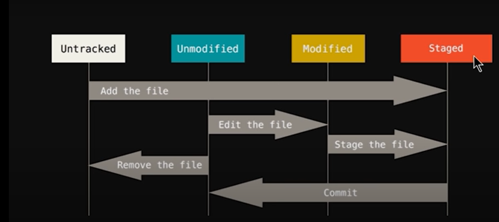
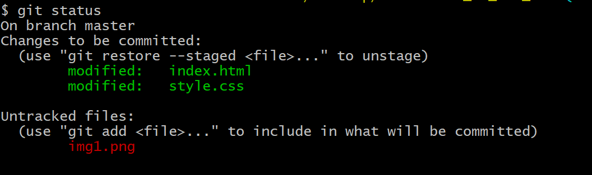
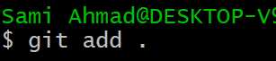
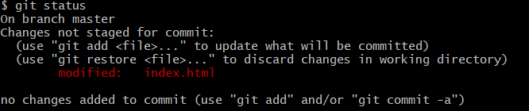
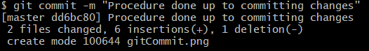
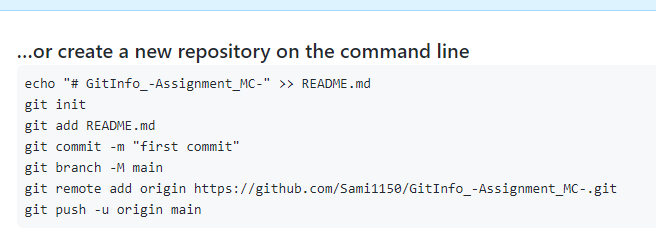
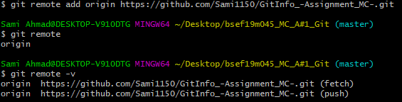

Name: Sami Ahmad
Roll Number: BSEF19M045
GITHUB
• List of GITHUB Commands
- git config --global user.name userName
- git config --global user.email userEmail
- git init
- git status
- git add fileName.fileExtension
- git add .
- git commit
- git remote add origin #url
- git remote
- git push
Why Github
-
- Github is used to save code and to share it with others. Suppose I want to save the code
so I can use it afterwards, I will use github repository.
- Also, take another scenerio, if you are making an application, and there are hundreds of files and hundreds of programmers
or developers are working there, so you would need git repository so everybody can access
same versions of file all the time. Every programmer will get same copy of the file. If new
programmers are added they do need to copy all stuffs or anything, they just need to run
few commands and they would have all the project in front of them.
- It also helps us to track changes in our project. Consider, for example, our application was working fine, we just
added new feature and many functions behave weirdly, because of that. We can say bugs
appeared. If your application community is considerably high, then it would definitely
create problem, so by using git we can revert back to the stabe version of application
easily and lunch the other one when bugs have been resolved. So git hve mutiple benefits.
How Git Works
For understanding of git, just see this image

- There are 4 stages of a file Untracked, Unmodified, Modified, Staged
- Initially, file is untracked and we need to tell github to please track changes in our files
- So first, we need to add files to staged area
- It is similar to the example, we are ready and posed correctly for the camera-man to click photo.
- Then we make changes in the file, that is add code
- The status of file is now Modified
- To commit, we again add that file to staging area, and then commit those changes
Procedure
- Download git from the link: https://git-scm.com/download/win
- Install it with default options
- Now open your project folder where you are working on any IDE,
run COMMAND PROMPT or GIT BASH there.
- Now, you need to add commands.
- Use command git config --global user.name userName to tell that all changes are made by xyz person
- Use command git config --global user.email userEmail to tell that changes in the project are made by xyz person having email abc
- Then use command git init
- This will create a new empty Git Repository
- Now we will move files to the staged area. But before that run command git status to know status of your files. It will show the list of files that are untracked

Showing the untracked files in red color
- So, to add files to be able to track, we need to send it to staging area. For that use command git add . (Add all files) or git add fileName (add file with specific name)

- Now you can begin doing work on your project. After a specific amount of work is done, you need to commit the changes.
- Run command git status and see that it will show the list of files that are modified.

- Use command git commit -m "_message to know what changes you've done" to commit those changes
- Now, the changes are pushed to the created repository

- Create or login your account on github.com
- Create a new repository there. Make sure to set it public
- Open it to know link of your repository and other links and commands as you can see in image

- We are now going to transferring files from our local repository to online repository
- Use command git remote add _name #url where origin act as name and url is the url of your repository.
- You can also check name of remore by command git remote
- Use command git remote -v to know the links of where to fetch or push the local repository

- Then use final command git pull
<<<<<<< HEAD
Done
GIT CLONE
Checks
=======
>>>>>>> 85af4d38786dbd4cf6de24bca5ff2fa1b31b77e7